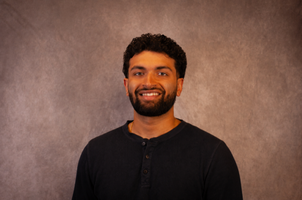

Sanjay Suresh

Hi, I’m Sanjay, a graduate student at UW–Madison studying quantum computing in the MSPQC program. My research is on compilers, error correction, and algorithms for quantum computers, working toward compilers for the modular, fault-tolerant machines those algorithms will actually run on. I’ve worked across the stack: distributed quantum computing at Argonne National Laboratory, fault-tolerant code design and benchmarking, and getting real engineering problems onto the hardware we have today.
Alongside research I build tools that try to make learning more efficient, more interesting, and more accessible, usually some flavor of pairing a reader with an AI that quizzes or tutors you as you go. Away from the lab I’m a Carnatic violinist and accompanist, and I’ve performed with and accompanied frontline artists across India and the US (music bio). I also keep some writing and notes here, which I’ll be filling in over time.